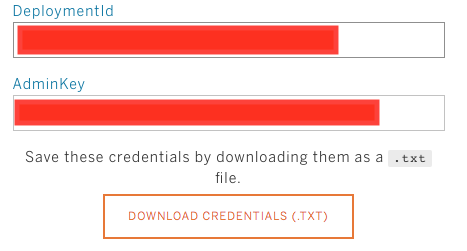
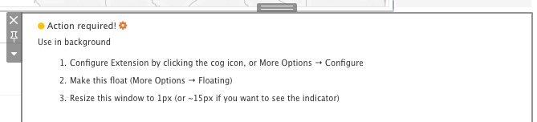
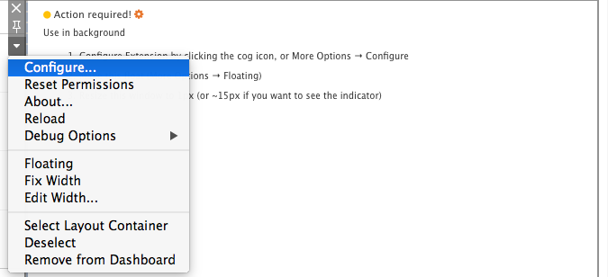

Register your deployment to get your deployment ID. Registration and Deployment ID are necessary to start collect data.
Make sure you save both the Deployment ID and the Admin key after registration, because you won’t be able to recover those later if they get lost. The Deployment ID is necessary to identify your Tableau users when storing the data and the Admin key acts as a secret key (password) when you try to access the behavior data.
Download the credentials.txt file after succesfully registering a Deployment.

Download the extension with clicking on the download trex file button
Add the extension to your dashboard. The extension should notify you that you have to configure it for usage.
Click on the Down Arrow on the extension border to bring up the context menu of the extension and click on "Configure".
Paste your deployment ID in the config screen and set a name for the workbook (it will appear in the reports under this name).
Optional: You can add extra settings as key-value pairs which can be retrieved in the WDC by the keys. This can come handy when you want to add some extra information to the events.
Then click "Save settings".
Start analyzing user behavior in Tableau: